| 수준 | 개수 | 비율 | 누적 비율 |
|---|---|---|---|
| makka-pakka | 4 | 40\(\%\) | 40\(\%\) |
| tombliboo | 2 | 20\(\%\) | 60\(\%\) |
| upsy-daisy | 4 | 40\(\%\) | 100\(\%\) |
6 데이터 조작
삶의 정원은 철학자들이 편의를 위해 설계한 틀 안에 갇히는 법이 없다.
아마도 트랙터를 몇 대 더 가져오면 해결될지도 모른다.
– 로저 젤라즈니1
이번 장은 제 기준으로 봐도 조금 특이한 장입니다. 이 장에서는 데이터 작업의 현실적인 문제들에 대해 보다 솔직하게 이야기하려고 합니다. 책의 다른 부분에서는 잘 다루지 않은 주제죠.
현실의 데이터 세트는 항상 깔끔하지 않습니다. 처음 받는 데이터 파일이 분석에 적합한 형식이 아닐 가능성이 높습니다. 변수 형식이 맞지 않을 수도 있고, 결측값(missing values)이 많을 수도 있으며, 특정 데이터 부분만 분석하고 싶을 수도 있습니다. 즉, 데이터를 분석할 수 있도록 적절한 형태로 변환하는 과정인 데이터 조작(data manipulation)이 필수적입니다.
이번 장의 목적은 이러한 현실적인 문제들을 다루는 기초적인 개념을 소개하는 것입니다. 실제 데이터에서 발생하는 다양한 문제를 해결하는 방법을 설명하기 위해, 이 책의 다른 부분과 마찬가지로 작은 예제 데이터 세트를 사용하여 데이터 분석과 관련된 개념들을 설명하겠습니다.
이 장은 하나의 일관된 이야기보다는 여러 기법을 모아둔 컬렉션에 가깝기 때문에, 우선 다룰 주요 주제 목록을 정리해 보겠습니다:
- [데이터를 표로 정리하고 교차 분석하기(Tabulating and cross-tabulating data)]
- [jamovi에서 논리 표현식(Logical expressions in jamovi)]
- [변수 변환 및 재코딩(Transforming and recoding a variable)]
- [추가적인 수학 함수 및 연산(A few more mathematical functions and operations)]
- [데이터의 특정 부분만 추출하기(Extracting a subset of the data)]
보시다시피, 이 장에서 다루는 주제는 꽤 광범위하며, 배울 내용도 많습니다. 이 책에서 가장 길고 난이도가 높은 장 중 하나이지만, 사실 다양한 중요한 개념들을 간략히 훑어보는 수준에 불과합니다. 제 조언은 다음과 같습니다. 이 장을 처음 읽을 때는 전체 흐름을 이해하는 데 집중하세요. 모든 내용을 한 번에 다 이해하려고 애쓰지 않아도 됩니다. 특히 후반부 내용은 처음에는 어려울 수 있습니다. 이 장을 완벽히 이해하지 못해도 책의 다른 부분을 읽는 데 큰 문제는 없습니다. 그러나 나중에 특정 개념이 필요할 때 이 장으로 다시 돌아와 내용을 확인하게 될 가능성이 높습니다.
6.1 데이터를 표로 요약하기
데이터를 분석할 때 가장 자주 수행하는 작업 중 하나는 빈도표(frequency table)를 작성하거나, 하나의 변수를 다른 변수와 교차 분석(crosstabulation)하는 것입니다. jamovi에서는 이러한 작업을 쉽게 수행할 수 있으며, 이 절에서 그 방법을 살펴보겠습니다.
6.1.1 단일 변수에 대한 표 만들기
간단한 예제부터 시작해 봅시다.
저는 어린 자녀를 둔 부모로서 자연스럽게 In the Night Garden 같은 TV 프로그램을 자주 보게 됩니다.
nightgarden.csv 파일에는 제가 짧은 대화 일부를 기록해 둔 데이터가 있습니다.
이 파일에는 우리가 주목할 만한 두 개의 변수, 즉 말한 사람(speaker)과 말한 내용(utterance)이 포함되어 있습니다.
이 데이터 파일을 jamovi에서 열고, ‘스프레드시트(spreadsheet)’ 보기에서 데이터를 살펴보면 다음과 같은 형태로 표시됩니다:
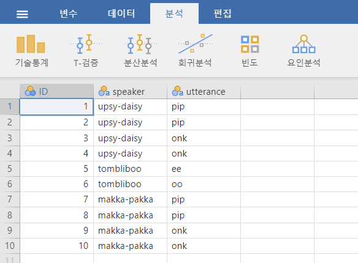
이제 각 캐릭터가 프로그램에서 말한 단어 수를 세어 빈도표를 만드는 작업을 해보겠습니다.
jamovi의 ‘기술통계’ 창에는 ‘빈도분포표’ 체크박스가 있는데, 이를 사용하면 빈도를 쉽게 계산할 수 있습니다.
그 결과는 Table 6.1 에서 볼 수 있습니다.
결과 창에 나타나는 첫 줄은 말한 사람을 나타내는 speaker 변수의 빈도표임을 알려줍니다.
‘Levels’ 열에는 speaker 열에 있는 모든 말한 사람이 나열됩니다.
‘Counts’ 열에는 각 말한 사람이 speaker 열에 몇 번 등장하는지 나타납니다.
즉, 이 표는 단순한 빈도표(frequency table)입니다.
6.1.2 두 변수에 대한 분할표 만들기
jamovi의 ‘빈도분포표’ 체크박스는 단일 변수에 대해서만 표를 생성합니다.
그러나 두 개의 변수를 조합하여 빈도를 나타내는 교차표 또는 분할표(cross-tabulation, contingency table)를 만들 수도 있습니다. 예를 들어, 말한 사람(speaker)과 말한 내용(utterance)을 조합하여 각각의 말한 사람이 특정 내용을 몇 번 말했는지를 확인해 보겠습니다.
이를 위해 jamovi에서 다음 분석을 수행합니다: ‘빈도’-‘분할표’-‘독립 표본’ 메뉴를 선택합니다. 그다음, speaker 변수를 ‘행’ 박스에, utterance 변수를 ‘열’ 박스에 설정한다.
이렇게 하면 Figure 6.2 같은 분할표(Contingency Table)를 얻을 수 있습니다.
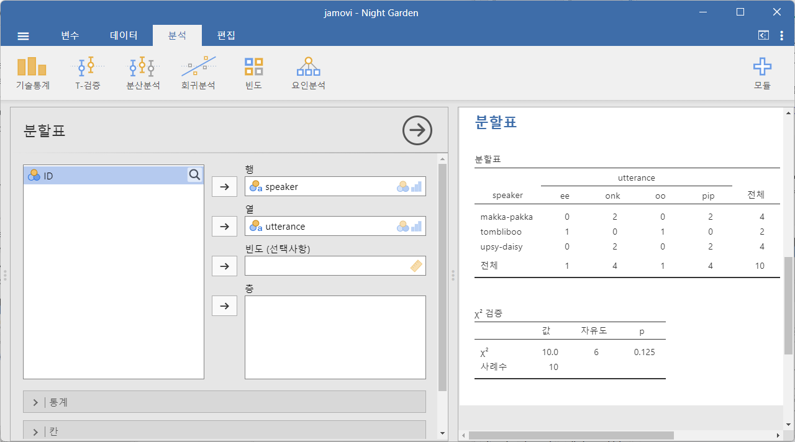
표 아래에 “\(\chi^2\) 테스트” 결과가 함께 표시되지만, 이는 Chapter 10 에서 다룰 예정이므로 지금은 신경 쓰지 않아도 됩니다.
이 분할표는 단순한 빈도(counts) 정보를 제공합니다.
예를 들어, 첫 번째 행, 두 번째 열의 값이 2인 것은 “Makka-Pakka”(첫 번째 행)가 “onk”(두 번째 열)를 두 번 말했다는 것을 의미합니다.
6.1.3 분할표에 백분율 추가하기
Figure 6.2 에 표시된 분할표는 원래 빈도(raw frequencies)만을 보여줍니다. 즉, 지정된 변수의 서로 다른 수준(levels)들의 조합에 대한 총 사례 수(counts)만을 나타냅니다.
하지만, 종종 데이터를 빈도뿐만 아니라 백분율(percentages)로도 정리하고 싶을 때가 있습니다.
jamovi의 ‘분할표(Contingency Tables)’ 창에서 ‘칸’ 옵션을 선택하면 다양한 형식의의 백분율을 추가할 수 있습니다.
우선, ‘행’ 체크박스를 선택하면, 출력 창의 분할표가 행 기준 백분율(row percentages)을 포함한 형태로 변경됩니다. 결과는 Figure 6.3 에서 볼 수 있습니다.
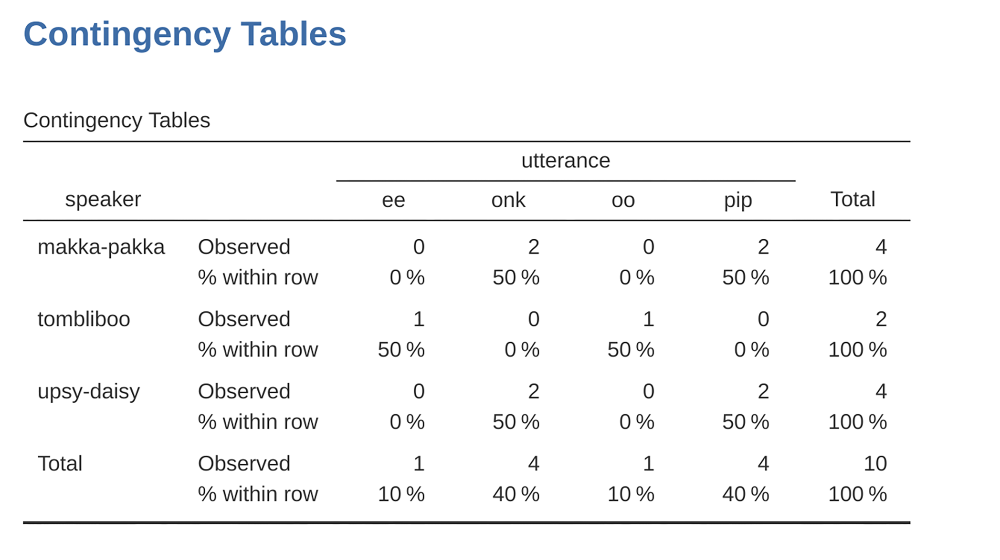
이 표는 각 캐릭터가 말한 전체 내용 중 특정 내용이 차지하는 비율을 나타냅니다.
예를 들어, “Makka-Pakka”가 말한 발화의 50%가 “pip”이며, 나머지 50%가 “onk”임을 보여줍니다.
이를 열 기준 백분율(column percentages)과 비교해 보겠습니다.
‘행’ 체크박스를 해제하고 ‘열(Column)’ 체크박스를 선택하면, 결과는 Figure 6.4 같이 변경됩니다.
이 경우, 각 특정 utterance와 관련된 speaker의 비율을 나타냅니다.
예를 들어, “ee”라는 말은 이 데이터에서 100%의 확률로 “Tombliboo”가 말한 것임을 보여줍니다.
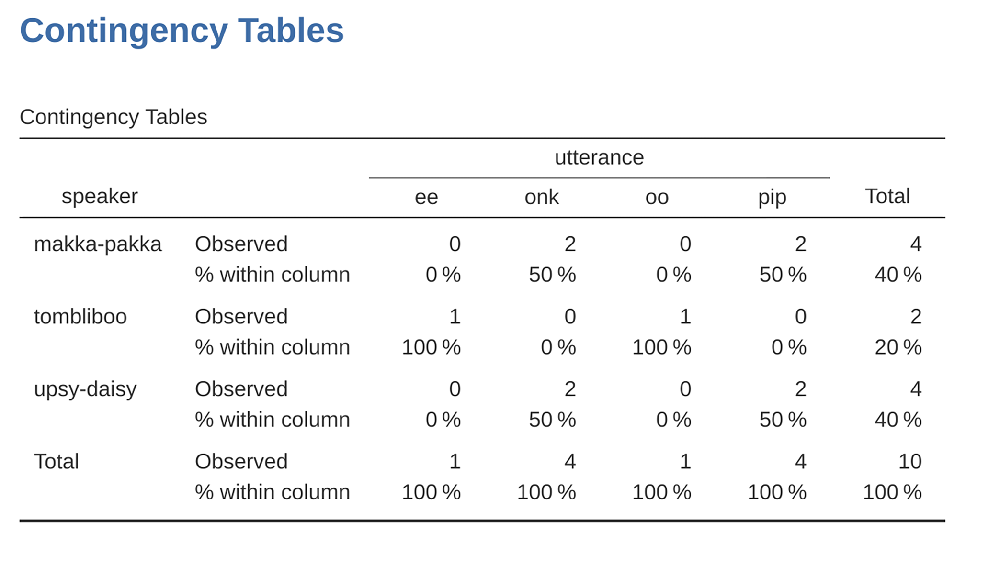
실습: 분할표 만들기
이 실습을 하려면 Tip 3.1 을 수행하여 lsj-data 모듈이 설치되어 있어야 합니다.
‘파일’-‘열기’-’데이터 라이브러리’를 메뉴에서 선택합니다. 그러면 ’learning statistics with jamovi’라는 폴더가 보일 것입니다. 이 폴더를 선택합니다. 이미 이전 실습에서 이 폴더를 선택했으면 바로 이 폴더가 열릴 수도 있습니다.
데이터 라이브러리에서 ’Night Garden’을 선택합니다. 그러면 Figure 6.1 같은 데이터가 스프레드시트 뷰에 나타납니다.
‘기술통계’-’기술통계’를 선택합니다.
‘기술통계’ 창에서 ‘speaker’를 ’변수’ 상자로 옮깁니다.
‘빈도분포표’ 체크 박스를 체크합니다. 그러면 결과 창에 빈도표가 나타납니다.
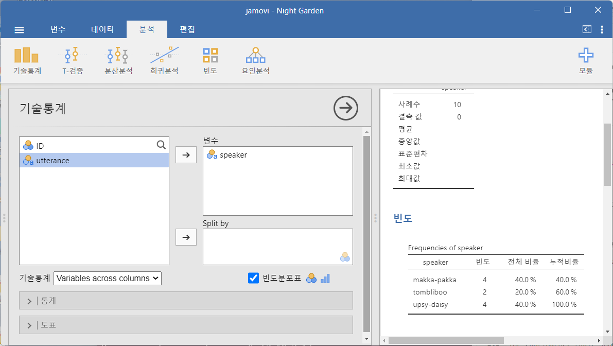
‘빈도’-‘분할표’-‘독립 표본’ 메뉴를 선택합니다.
‘분할표’ 창에서
speaker변수를 ‘행’ 박스로,utterance변수를 ‘열’ 박스로 옮깁니다. 그러면 결과 창에 분할표가 나타납니다.‘칸’ 옵션을 선택하면 현재 ‘관찰 빈도’만 체크되어 있을 것입니다. ’비율’의 ’행’ 체크 상자을 체크하여 행 기준 백분율을 표시해 봅니다.
- ‘비율’의 ’행’, ‘열’, ‘전체’ 등을 체크하거나 체크를 해제하며 어떠한 백분율이 나타나는지 관찰합니다. 이 때 행과 열의 전체 합이 어떻게 변하는지 주의 깊게 살펴 보십시오.
6.2 jamovi의 논리 표현식
jamovi에서 데이터 변환(data transformation)을 수행할 때 중요한 개념 중 하나는 논리값(logical value)입니다.
논리값이란 어떤 것이 참(true)인지 거짓(false)인지에 대한 판단을 의미합니다.
jamovi에서 논리값은 매우 단순합니다. TRUE(참)와 FALSE(거짓) 두 가지뿐입니다. 비록 단순하지만, 논리값은 매우 유용한 개념입니다.
그럼 어떻게 작동하는지 살펴보겠습니다.
6.2.1 수학적 참과 거짓 평가하기
조지 오웰(George Orwell)의 고전 1984에 나오는 전체주의 정당이 사용한 슬로건 중 하나는 “2 더하기 2는 5(Two plus two equals five)”였습니다.
이는 가장 기본적인 진리조차 왜곡할 수 있을 때, 정치적 지배는 완성된다라는 개념을 내포하고 있습니다. 소설에서 주인공 윈스턴 스미스(Winston Smith)는 고문 끝에 결국 이 명제를 받아들이고 맙니다. 책에서는 이를 “인간은 무한히 조작될 수 있다”라고 표현합니다.
하지만 저는 인간이 그렇게까지 조작될 수 있다고 생각하지 않으며2, 적어도 jamovi는 절대 그렇지 않습니다.
jamovi는 수학적 사실을 매우 엄격하게 판단합니다.
예를 들어, jamovi에 \(2 + 2\)를 계산하도록 요청하면3,
항상 같은 결과를 반환합니다. 그리고 그 답은 결코 5가 아닙니다!
물론, 지금까지 jamovi는 단순히 계산을 수행했을 뿐입니다.
jamovi에게 \(2 + 2 = 4\)가 참인지 판단하도록 요청한 것은 아닙니다.
jamovi에게 명시적으로 참(True)인지 거짓(False)인지 판단하도록 하려면
아래와 같은 명령을 사용할 수 있습니다.
\[2 + 2 == 4\]
여기서 사용된 == 기호는 “동등 연산자(equality operator)”라고 불립니다. 이 연산자는 jamovi에게 이 명제가 참인지 거짓인지 평가하라고 강제합니다.4 자, 이제 당의 슬로건에 대해 jamovi의 판단을 확인해 보겠습니다. jamovi의 ‘계산된 새 변수(Compute new variable)’ 창에서 아래 식을 입력해 보세요.
\[2 + 2 == 5\]
그럼, jamovi는 어떤 결과를 반환할까요? jamovi는 새로운 변수 열(column)에 FALSE 값을 출력할 것입니다. 즉, \(2 + 2 = 5\)는 거짓이다라고 확실하게 판단하는 것입니다.
6.2.2 논리 연산
앞에서 논리 연산이 어떻게 동작하는지 살펴보았습니다. 하지만 지금까지 본 것은 가장 단순한 예제였습니다. 논리 연산을 다른 연산 및 함수와 결합하여 더 복잡한 방식으로 사용할 수도 있습니다. 예를 들면 다음과 같습니다.
\[3 \times 3 + 4 \times 4 == 5 \times 5\]
또는
\[SQRT(25) == 5\]
뿐만 아니라, Table 6.2 에서 볼 수 있듯이 기본적인 수학 개념과 관련된 여러 논리 연산자가 존재합니다. 이들은 비교적 직관적이므로 쉽게 이해할 수 있을 것입니다. 예를 들어, “작다(less than)” 연산자 <는 왼쪽 숫자가 오른쪽 숫자보다 작은지 확인합니다. 만약 작은 경우 TRUE를 반환하며, 두 숫자가 같거나 오른쪽 숫자가 더 작으면 FALSE를 반환합니다.
반면, “작거나 같다(less than or equal to)” 연산자 <=는 왼쪽 숫자가 오른쪽 숫자보다 작거나 같은 경우 TRUE를 반환합니다. 이제 “크다(greater than)” 연산자 >와 “크거나 같다(greater than or equal to)” 연산자 >=가 어떤 역할을 하는지 충분히 짐작할 수 있을 것입니다!
| 연산 | 연산자 | 예제 입력 | 결과 |
|---|---|---|---|
| 작다 | < | 2 < 3 | 참 |
| 작거나 같다 | <= | 2 <= 2 | 참 |
| 크다 | > | 2 > 3 | 거짓 |
| 크거나 같다 | >= | 2 >= 2 | 참 |
| 같다 | == | 2 == 3 | 거짓 |
| 같지 않다 | != | 2 != 3 | 참 |
다음으로 살펴볼 논리 연산자는 “같지 않다(not equal to)” 연산자 !=입니다.
이 연산자는 양쪽 값이 서로 다를 경우 TRUE를 반환합니다.
즉, 2 + 2는 5와 같지 않으므로, jamovi는 TRUE를 반환할 것입니다.
직접 실행해보세요.
\[2 + 2 \text{ != } 5\]
하지만 아직 다 끝난 게 아닙니다! 알아두면 유용한 논리 연산자 세 개가 더 있습니다. Table 6.3 에서 볼 수 있는 “부정(not)” 연산자 !, “논리곱(and)” 연산자 and, “논리합(or)” 연산자 or입니다. 이들 연산자의 동작 방식은 이름에서 쉽게 유추할 수 있습니다.
예를 들어, 다음 명제를 평가해 보겠습니다. “2 + 2 = 4 또는 2 + 2 = 5”. 이 문장은 참입니다. 왜냐하면 “논리합(or)” 연산자는 하나만 참이면 전체가 참이 되기 때문입니다.5
| 연산 | 연산자 | 예제 입력 | 결과 |
|---|---|---|---|
| 부정 | NOT | NOT(1==1) | 거짓 |
| 또는 | or | (1==1) or (2==3) | 참 |
| 그리고 | and | (1==1) and (2==3) | 거짓 |
반면, 다음 명제를 평가해보겠습니다. “2 + 2 = 4 그리고 2 + 2 = 5”. 이 문장은 거짓입니다. 왜냐하면 “논리곱(and)” 연산자는 모든 조건이 참일 때만 참을 반환하기 때문입니다. 이를 jamovi의 논리 연산식으로 표현하면 다음과 같습니다.
\[(2+2 == 4) \text{ and } (2+2 == 5)\]
마지막으로, “부정(not)” 연산자는 간단하지만 설명하기 까다로운 개념입니다. 예를 들어, “2 + 2 = 5가 아니다”라는 명제를 평가해 보겠습니다. 이 문장은 참입니다. 왜냐하면 “2 + 2 = 5는 거짓이다”라는 말과 동일한 의미를 갖기 때문입니다. jamovi에서 이를 표현하는 방법은 다음과 같습니다.
\[NOT(2+2 == 5)\]
즉, 2+2 == 5가 FALSE이므로 NOT(2+2 == 5)는 TRUE가 됩니다. 결국, “거짓의 부정(not false)”은 “참(true)”이라는 논리적 사실을 확인한 것입니다. 현실에서는 흑백 논리가 항상 적용되지는 않지만, jamovi에서는 모든 것이 참(TRUE) 또는 거짓(FALSE) 중 하나로만 표현됩니다. 어떤 모호함도 허용되지 않습니다. 사실, 이번 예제에서는 NOT 연산자와 == 연산자를 따로 사용할 필요가 없었습니다. 그 대신 “같지 않다(not equal to)” 연산자 !=를 바로 사용할 수도 있었습니다.
\[2+2 \text{ != } 5\]
6.2.3 논리 연산을 텍스트에 적용하기
논리 연산자를 논리 데이터뿐만 아니라 텍스트에도 적용할 수 있다는 점을 간단히 설명하고자 합니다. 다만, jamovi가 이러한 연산을 해석하는 방식에 대해 조금 더 주의 깊게 이해해야 합니다. 이 절에서는 “같다(equal to)” 연산자 ==가 텍스트에 어떻게 적용되는지 다루겠습니다. 이는 가장 중요한 연산자이기 때문입니다. 당연히 “같지 않다(not equal to)” 연산자 !=는 ==의 정반대 결과를 반환하므로 내재적으로 함께 다루지만, !=의 사용 예시는 따로 제시하지 않겠습니다.
자, 이제 어떻게 동작하는지 살펴봅시다. 한편으로는 매우 간단합니다. 예를 들어, jamovi에게 “cat”과 “dog”가 같은지 물어볼 수 있습니다.
"cat" == "dog"
이것은 거짓임이 너무나도 자명하며, jamovi도 이를 쉽게 판단할 수 있습니다. 마찬가지로, jamovi는 "cat"이 "cat"과 동일하다는 것도 인식합니다.
"cat" == "cat"
이 역시 예상한 대로입니다. 그러나 jamovi는 철자나 띄어쓰기 등에 관해서는 전혀 관대하지 않습니다. 즉, 두 문자열이 조금이라도 다르면 jamovi는 동일하지 않다고 판단합니다. 예를 들어, 다음과 같은 경우를 생각해봅시다.
" cat" == "cat"
"cat" == "CAT"
"cat" == "c a t"
이 모든 비교 연산은 FALSE를 반환합니다. jamovi는 공백이나 대소문자 차이까지도 정확히 구분하기 때문입니다.
또한, jamovi에서는 < 및 > 연산자를 사용하여 알파벳 순서상 어떤 문자열이 먼저 오는지 판단할 수도 있습니다. 다만, 실제로는 단순한 알파벳 정렬보다 조금 더 복잡한 방식으로 동작합니다. 우선 간단한 예제부터 살펴봅시다.
"cat" < "dog"
jamovi에서 이 표현식은 TRUE로 평가됩니다. 이유는 "cat"이 "dog"보다 알파벳 순서상 먼저 오기 때문입니다. 반면, "cat"이 "anteater"보다 앞서는지 확인해보면 FALSE가 나옵니다. 여기까지는 사전(dictionary)에서 단어를 찾는 방식과 크게 다르지 않습니다.
하지만 텍스트 데이터의 정렬 방식은 단순한 사전 순서보다 더 복잡합니다. 그렇다면 "cat"과 "CAT" 중에서 어떤 것이 먼저 올까요? 직접 실행해보세요.
"CAT" < "cat"
이 표현식은 TRUE로 평가됩니다. 즉, jamovi는 대문자가 소문자보다 먼저 온다고 가정합니다. 여기까지는 꽤 직관적인 결과입니다. 그러나 jamovi는 모든 대문자가 모든 소문자보다 먼저 온다고 가정한다는 점이 흥미롭습니다. 예를 들어, "anteater" < "zebra"는 TRUE이고, 대문자로 변환한 "ANTEATER" < "ZEBRA" 역시 TRUE입니다. 그런데 다음과 같은 경우는 어떻게 될까요?
"anteater" < "ZEBRA"
이 표현식은 FALSE로 평가됩니다. 즉, “anteater”가 “ZEBRA”보다 사전 순서상 앞선다고 볼 수 있지만, jamovi는 대문자를 더 우선시하기 때문에 “ZEBRA”가 더 먼저 온다고 판단합니다. 이러한 동작이 다소 직관적이지 않을 수 있습니다. 이러한 특성을 이해하는 데 도움이 되도록, jamovi가 텍스트 문자를 처리하는 순서를 Table 6.4 에 정리하였습니다.
| \( \text{!} \) | \( \text{``} \) | \( \# \) | \( \text{\$} \) | \( \% \) | \( \& \) | \( \text{'} \) | \( \text{(} \) |
|---|---|---|---|---|---|---|---|
| \( \text{)} \) | \( \text{*} \) | \( \text{+} \) | \( \text{,} \) | \( \text{-} \) | \( \text{.} \) | \( \text{/} \) | 0 |
| 1 | 2 | 3 | 4 | 5 | 6 | 7 | 8 |
| 9 | \( \text{:} \) | \( \text{;} \) | < | \( \text{=} \) | > | \( \text{?} \) | \( \text{@} \) |
| A | B | C | D | E | F | G | H |
| I | J | K | L | M | N | O | P |
| Q | R | S | T | U | V | W | X |
| Y | Z | \( \text{[} \) | \( \backslash \) | \( \text{]} \) | \( \hat{} \) | \( \_ \) | \( \text{`} \) |
| a | b | c | d | e | g | h | i |
| j | k | l | m | n | o | p | q |
| r | s | t | u | v | w | x | y |
| z | \(\text{\{}\) | \(\text{|}\) | \(\text{\}}\) |
6.3 변수 변환 및 재코딩
실제 데이터 분석에서는 특정 변수가 원하는 형태와 정확히 일치하지 않는 경우가 많습니다. 예를 들어, 연속형 변수(예: 나이)를 몇 개의 범주(예: 젊은, 중년, 노년)로 나누는 것이 편리할 수 있습니다. 때로는 숫자 변수를 다른 숫자 변수로 변환해야 할 수도 있습니다(예: 원래 변수의 절댓값을 분석하고 싶을 때). 이 절에서는 jamovi에서 이러한 작업을 수행하는 몇 가지 핵심 방법을 설명하겠습니다.
6.3.1 변환된 변수 생성하기
첫 번째로 다룰 개념은 변환(transforming)입니다. 문자 그대로 해석하면 변수에 대한 모든 조작이 변환에 해당하지만, 실제로는 원래 변수에 간단한 수학적 함수를 적용하여 새로운 변수를 생성하는 경우를 의미합니다. 이렇게 하면 (a) 실제로 관심 있는 대상을 더 잘 설명할 수 있거나, (b) 수행하려는 통계 검정의 가정과 더 잘 부합하는 데이터를 만들 수 있습니다. 아직 통계 검정이나 그 가정에 대해 설명하지 않았으므로, 첫 번째 경우를 예제로 보여드리겠습니다.
가령, 10명을 대상으로 다음과 같은 질문을 한 짧은 연구를 수행했다고 가정해 보겠습니다.
“공룡은 멋지다”라는 주장에 대해 1(전혀 동의하지 않음)에서 7(매우 동의함)까지의 척도로 어느 정도 동의하시나요?
이제 데이터를 불러와 확인해 보겠습니다. 데이터 파일 likert.omv에는 이 10명이 응답한 원본 Likert 척도 값이 포함된 단일 변수가 있습니다. 하지만 이를 자세히 생각해 보면, 현재 방식으로 응답을 표현하는 것이 최선이 아닙니다. 응답 척도를 대칭적으로 설정했으므로 척도의 중간값을 0(의견 없음)으로, 두 끝점을 “3(매우 동의함)” 및 “-3(매우 동의하지 않음)”으로 코딩하는 것이 더 적절합니다. 이렇게 데이터를 재코딩하면 실제로 우리가 응답을 해석하는 방식과 더 잘 맞아떨어집니다.
이 변환은 매우 간단합니다. 원본 점수에서 4를 빼면 됩니다. jamovi에서는 새 변수를 계산하여 이를 수행할 수 있습니다. ‘데이터’-‘계산’ 버튼을 클릭하면 스프레드시트에 새로운 변수가 추가됩니다. 이 변수를 likert.centered라고 이름을 지정한 후, 수식 입력 상자에 다음과 같이 입력합니다(Figure 6.5 참조).
likert.raw - 4
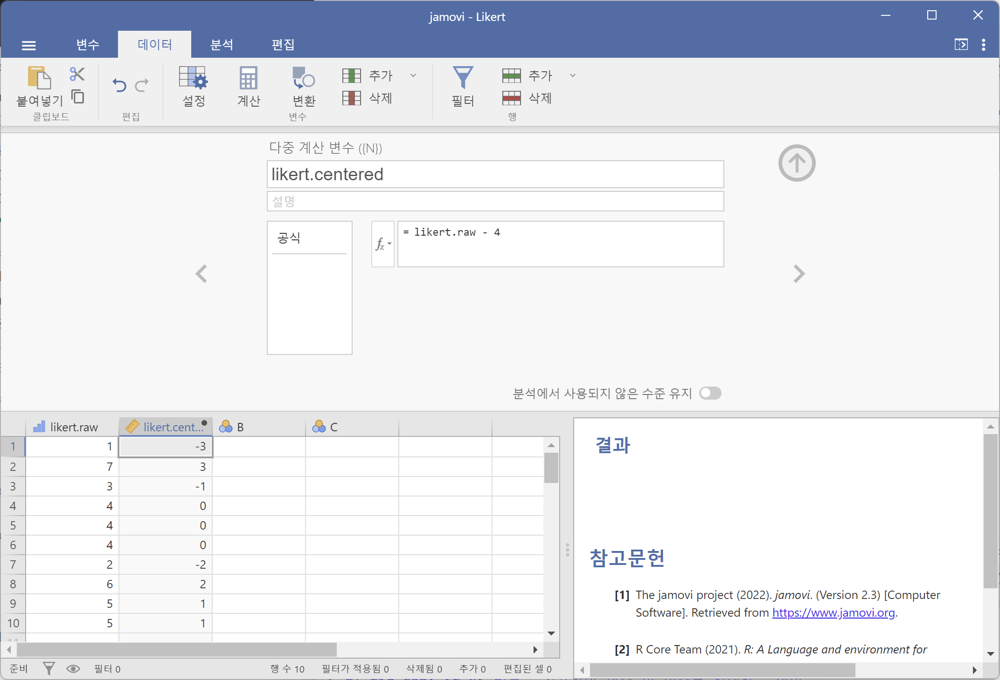
이렇게 데이터를 변환하면 응답 강도(의견의 세기)와 응답 방향(찬성 또는 반대)을 별도로 분석할 수 있는 유용한 형식이 됩니다. 이를 위해 likert.centered 변수에 대해 두 가지 다른 변환을 수행할 수 있습니다. 먼저, 의견 강도를 나타내는 변수(opinion.strength)를 계산하려면 변환된 데이터의 절댓값을 구하면 됩니다(‘ABS’ 함수 사용).6
jamovi에서 ‘계산’ 버튼을 사용하여 새 변수를 만듭니다. 변수명을 ‘opinion.strength’로 설정한 후, ’수식’ 상자 옆의 fx 버튼을 클릭합니다. 여기에서 사용 가능한 ‘함수’ 및 ‘변수’ 목록이 나타납니다. ABS를 더블 클릭한 후 likert.centered'를 더블 클릭하면ABS(likert.centered)`라는 수식이 자동으로 입력되며, 새로운 변수가 생성됩니다(Figure 6.6 참조).
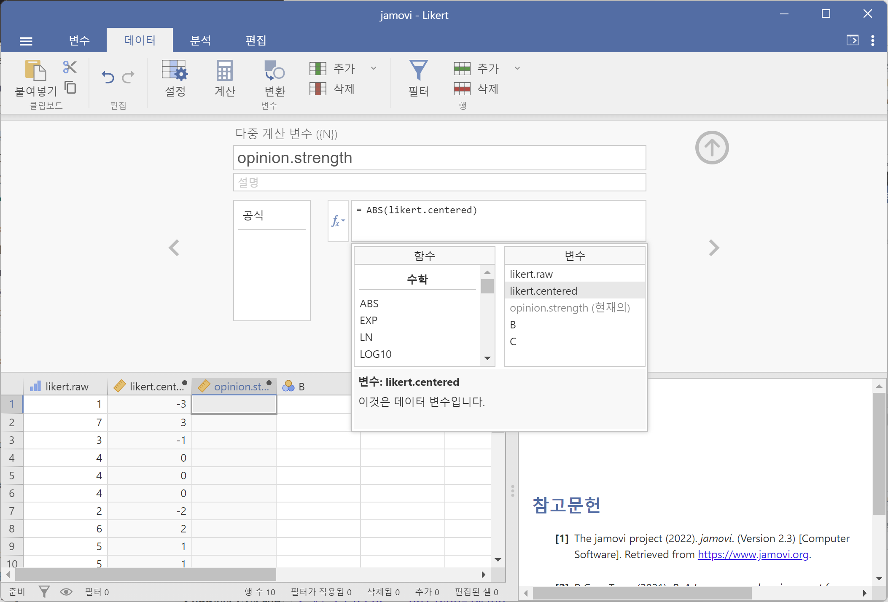
다음으로, 의견의 방향만을 나타내는 변수를 만들고 강도의 영향을 배제하려면 변수의 “부호(sign)”를 계산해야 합니다. jamovi에서는 IF 함수를 사용하여 이를 수행할 수 있습니다. ‘계산’ 버튼을 사용하여 새 변수를 만들고, 변수명을 opinion.sign으로 지정한 후, 수식 입력 상자에 다음과 같이 입력합니다.
IF(likert.centred \(==\) 0, 0, likert.centred / opinion.strength)
이제 likert.centred 변수에서 음수 값은 -1, 양수 값은 1, 0은 그대로 유지됩니다.
-1 1 -1 0 0 0 -1 1 1 1
IF 명령의 동작을 살펴보겠습니다. jamovi에서 IF 문은 세 부분으로 구성됩니다: IF(조건, 참일 때 값, 거짓일 때 값). 첫 번째 부분은 논리 또는 수학적 표현식입니다. 여기서는 likert.centred == 0을 사용하여 likert.centred 값이 0인 경우를 판별했습니다. 두 번째 부분에서는 이 조건이 참일 경우 새 값을 지정합니다(즉, likert.centred 값이 0이면 0으로 유지). 마지막으로, 조건이 거짓인 경우(즉, likert.centred 값이 0이 아닐 경우) 수행할 연산을 입력합니다. 우리는 likert.centred를 opinion.strength로 나누어 -1 또는 +1을 계산했습니다.7
이제 likert.raw 데이터를 변환한 세 개의 새로운 변수를 얻었습니다. 각각이 원본 데이터를 보다 유용한 형식으로 변환하는 데 기여합니다.
6.4 변수를 더 적은 개수의 이산 수준 또는 범주로 축소하기
실제 분석에서 자주 접하는 작업 중 하나는 변수를 더 적은 개수의 이산 수준 또는 범주로 축소하는 문제입니다. 예를 들어, 한 사교 모임에서 사람들의 연령 분포를 살펴보고 싶다고 가정해 보겠습니다:
60,58,24,26,34,42,31,30,33,2,9
어떤 상황에서는 이러한 데이터를 소수의 범주로 그룹화하는 것이 유용할 수 있습니다. 예를 들어, 데이터를 다음 세 개의 넓은 범주로 그룹화할 수 있습니다: 어린 연령층 (0-20), 성인 (21-40), 고령층 (41-60). 이는 다소 거친 분류이며, 제가 붙인 라벨은 이 데이터의 문맥에서만 의미를 가집니다(예: 일반적으로 볼 때, 42세 사람이 자신을 “고령층”이라고 생각하지 않을 것입니다). 변수를 이런 식으로 분할하는 작업은 이미 사용한 jamovi의 IF 함수를 이용하여 쉽게 수행할 수 있습니다. 이번에는 중첩된 IF 문을 지정해야 하는데, 이는 단순히 첫 번째 논리 표현이 참이면 첫 번째 값을 삽입하고, 두 번째 논리 표현이 참이면 두 번째 값을 삽입하며, 세 번째 논리 표현이 참이면 세 번째 값을 삽입하는 방식입니다. 이를 다음과 같이 작성할 수 있습니다:
IF(Age >= 0 and Age <= 20, 1, IF(Age >= 21 and Age <= 40, 2, IF(Age >= 41 and Age <= 60, 3 )))
중첩이 발생할 때 세 개의 왼쪽 괄호가 사용되므로 전체 문장이 세 개의 오른쪽 괄호로 끝나야 오류 메시지가 발생하지 않습니다. 이 데이터 조작을 보여주는 jamovi 스크린샷과 이에 따른 빈도표는 Figure 6.7 에 나와 있습니다.
연구 프로젝트의 맥락에서 생성된 범주가 의미가 있는지 시간을 들여 확인하는 것이 중요합니다. 만약 의미가 없다면, 해당 범주를 사용하는 데이터 분석 역시 의미가 없을 가능성이 큽니다. 저는 사람들이 (연속적이고 복잡한) 데이터를 몇 개의 (이산적이고 단순한) 범주로 나누고, 원본 데이터 대신 범주화된 데이터를 사용하여 분석을 수행하려는 경향이 강하다는 점을 자주 목격합니다.8 이것이 본질적으로 나쁜 아이디어라고 단언할 수는 없지만, 경우에 따라 상당히 심각한 단점이 있을 수 있으므로 신중할 필요가 있습니다.
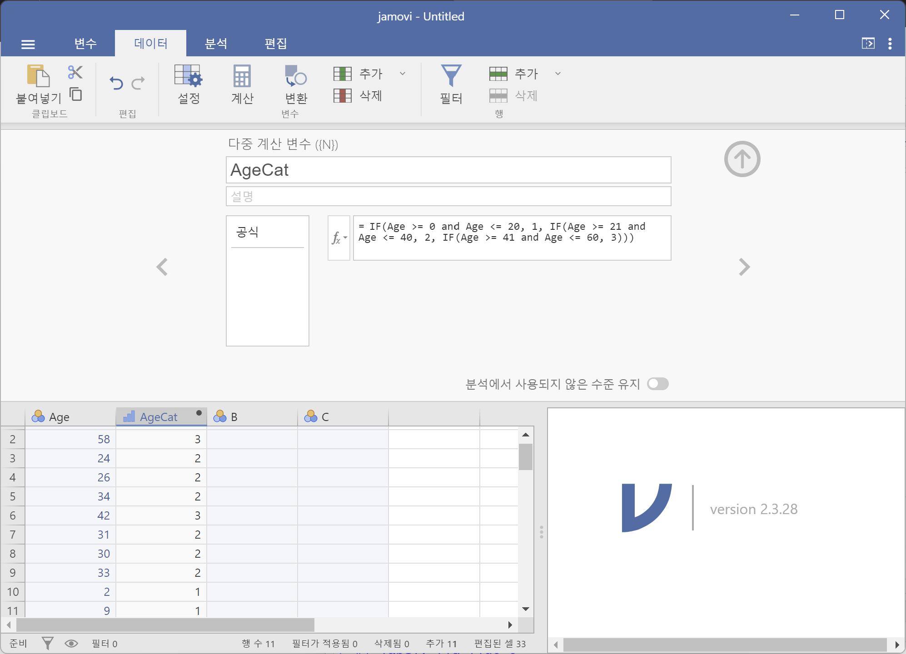
실습: 수치형 변수를 범주형 변수로 만들기
‘파일’-‘새로운’ 메뉴로 새로운 스프레드시트 창을 만듭니다.
“A” 열을 더블클릭하여 열의 이름을
Age로 변경한다. 그리고 위 화살표를 클릭하여 스프레드시트로 돌아옵니다.다음 데이터를
Age열에 차례로 입력합니다.
60,58,24,26,34,42,31,30,33,2,9
- ‘데이터’-’계산’을 클릭하여 새로운 계산 변수를 추가한다. (Figure 6.7 참조)
- 변수 이름을
AgeCat이라고 한다. - \(f_x\)를 클릭하여
IF를 선택한다. 그리고 다음이IF()의 괄호 안에 기술되도록 한다.
IF(Age >= 0 and Age <= 20, 1, IF(Age >= 21 and Age <= 40, 2, IF(Age >= 41 and Age <= 60, 3 )))
‘분석’-‘기술통계’-‘기술통계’ 메뉴를 선택한다.
AgeCat을 ‘변수’ 상자로 옮긴 후, ’빈도분포표’를 클릭한다. 그러면 결과 창에 나이대 별로 다음과 같은 빈도표가 나타난다.
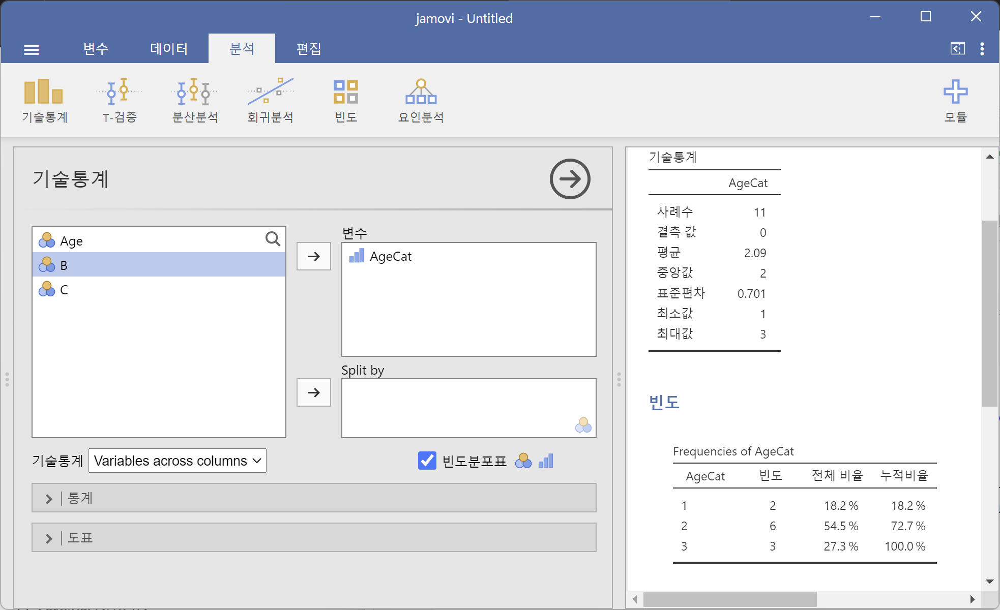
6.4.1 여러 변수에 적용할 수 있는 변환 생성하기
때때로 여러 변수에 동일한 변환을 적용해야 할 때가 있습니다. 예를 들어, 여러 설문 항목을 동일한 방식으로 다시 계산하거나 재코딩해야 할 경우가 있습니다. jamovi의 유용한 기능 중 하나는 ‘데이터’-‘변환’ 메뉴를 사용하여 변환을 생성하고 저장한 후 여러 변수에 적용할 수 있다는 것입니다. 앞서 살펴본 첫 번째 예제를 다시 사용하여, 10명의 사람이 응답한 원래 리커트 척도 데이터가 포함된 likert.omv 데이터 파일을 활용해 보겠습니다. 변환을 생성하고 저장한 후 여러 변수에 적용하려면, 먼저 스프레드시트 편집기에서 변환을 생성할 변수를 선택합니다. 이 예제에서는 likert.raw 변수를 선택합니다. 그런 다음 jamovi의 ‘데이터’ 리본에서 ‘변환’ 메뉴를 클릭하면 Figure 6.8 같은 화면이 나타납니다.
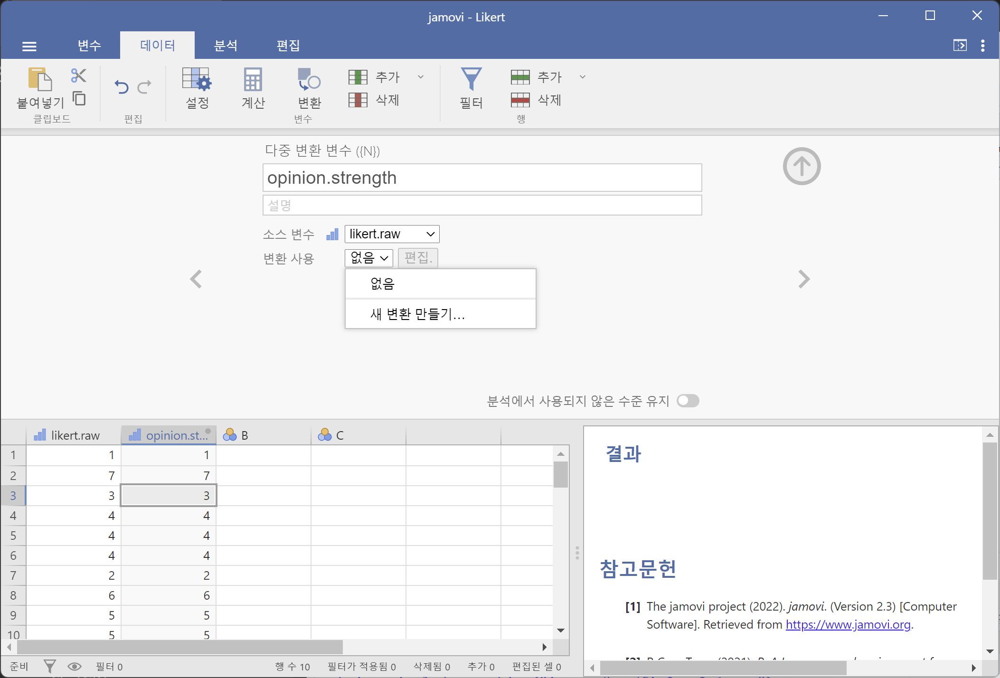
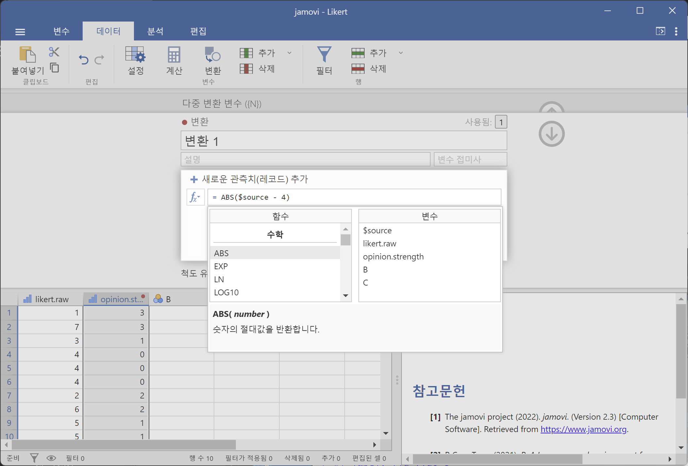
새 변수를 opinion.strength라고 명명한 후, ‘변환 사용’ 선택 상자를 클릭하고 ’새 변환 만들기…’를 선택합니다. 여기에서 변환을 생성하고 이름을 지정할 수 있습니다. 변환은 기본적으로 ’변환 1’이라는 이름이 자동으로 지정되지만 필요하면 변경할 수 있습니다. 그런 다음 함수 입력 상자에 ABS($source - 4)를 입력한 후 Enter 키를 누르면 변환이 생성되고 likert.raw 변수에 적용됩니다.
주목할 점은 변수 라벨을 직접 사용하지 않고, 대신 $source를 사용했다는 것입니다. 이는 동일한 변환을 여러 변수에 적용할 수 있도록 하기 위함이며, jamovi에서는 변환할 원본 변수를 $source로 참조해야 합니다. 변환은 저장되며, 데이터 세트를 .omv 파일로 저장하면 언제든 다시 사용할 수 있습니다.
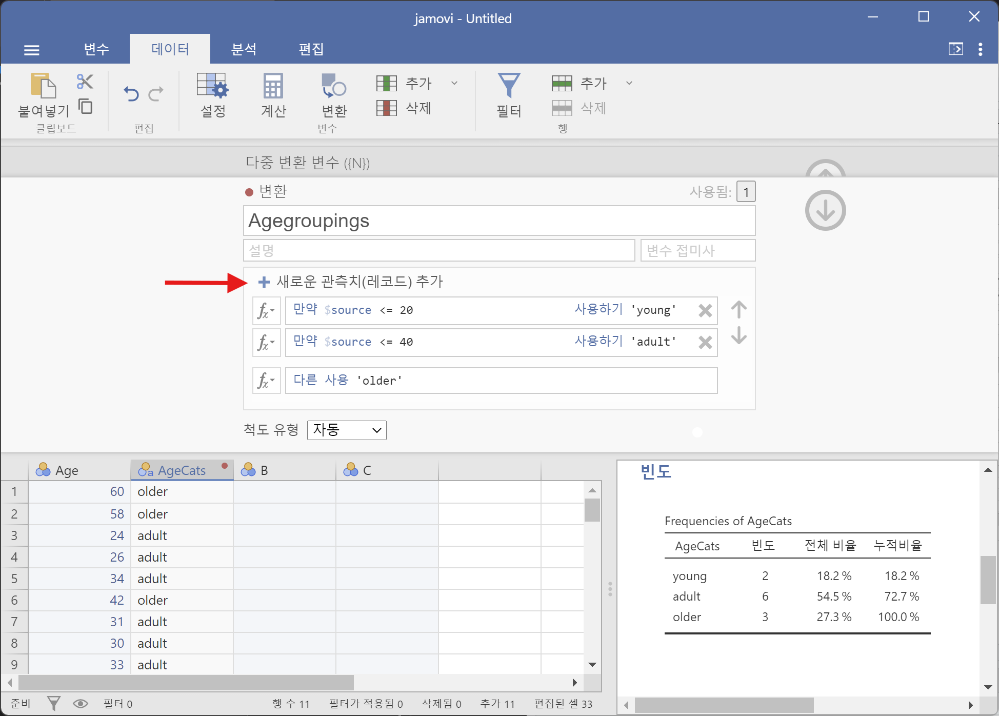
앞서 살펴본 사교 모임에서의 연령 분포 예제를 변환을 사용하여 다시 수행할 수도 있습니다. 시도해 보세요! 이전에 이 변수를 ‘younger’, ‘adult’, ‘older’의 세 그룹으로 분류한 바 있습니다. 이번에는 jamovi의 ’변환’ 창에서 ‘새로운 관측치(레코드) 추가’ 버튼을 사용하여 동일한 작업을 수행하겠습니다. 데이터 세트를 다시 불러오거나 새로 만들고, 새로운 변수 변환을 설정합니다. 변환된 변수를 ‘AgeCats’로 명명하고, 변환 이름은 ’Agegroupings’로 지정합니다. 그런 다음 함수 상자 옆에 있는 “\(+\)” 버튼을 클릭합니다. 이것이 ’새로운 관측치(레코드) 추가’ 버튼이며, Figure 6.10 에서 빨간색 화살표로 표시된 위치에 있습니다.
Figure 6.10 의 변환을 재현하면 새로운 값이 스프레드시트 창에 나타날 것입니다. 또한, 생성된 연령 그룹 변환이 저장되므로 언제든 다시 적용할 수 있습니다. 물론 같은 데이터 세트 내에서 여러 개의 ‘Age’ 변수를 가질 가능성은 낮겠지만, jamovi에서 변환을 설정하는 방법을 익혔으므로 다른 유형의 변수에도 동일한 개념을 적용할 수 있습니다.
이러한 변환을 사용할 수 있는 일반적인 시나리오는 설문 조사 척도가 여러 개의 문항(예: 20개 항목)으로 구성된 경우입니다. 원래 1에서 6까지 점수를 매겼던 문항들을 1에서 3까지 다시 코딩해야 하는 상황을 예로 들 수 있습니다. jamovi에서는 변환을 생성한 후 이를 반복 적용하여 모든 변수를 손쉽게 다시 코딩할 수 있습니다.
6.5 추가적인 수학 함수와 연산
변수 변환 및 재코딩 절에서 변수 변환의 개념을 논의하면서, 데이터에 적용할 수 있는 많은 변환들이 비교적 간단한 수학 함수와 연산을 기반으로 한다는 점을 설명했습니다. 이번 절에서는 그 논의를 다시 살펴보고, 실제 데이터 분석에서 유용하게 사용될 수 있는 몇 가지 추가적인 수학 함수와 산술 연산을 소개하고자 합니다. Table 6.5 에서는 여기서 다루거나 이후에 언급할 다양한 수학 함수들을 간략하게 개괄하고 있습니다.9 물론, 이 표가 가능한 모든 기능을 포괄하는 것은 아니지만, 데이터 분석에서 자주 사용되며 jamovi에서 지원하는 함수들을 포함하고 있습니다.
| 함수 | 예제 입력 | 결과 | |
|---|---|---|---|
| 제곱근 | SQRT(x) | SQRT(25) | 5 |
| 절대값 | ABS(x) | ABS(-23) | 23 |
| 로그 (밑 10) | LOG10(x) | LOG10(1000) | 3 |
| 로그 (밑 e) | LN(x) | LN(1000) | 6.91 |
| 지수 | EXP(x) | EXP(6.908) | 1e+03 |
| 박스-콕스 변환 | BOXCOX(x, lamda) | BOXCOX(6.908, 3) | 110 |
6.5.1 로그와 지수 함수
앞서 언급한 것처럼, jamovi에는 다양한 수학 함수들이 내장되어 있으며, 모든 함수를 설명하거나 나열하는 것은 큰 의미가 없습니다. 대체로 이 책에서는 필수적인 함수들만 다루고자 하지만, 로그 함수와 지수 함수는 예외로 하고 싶습니다. 비록 이 책의 다른 부분에서는 필요하지 않지만, 보다 넓은 통계학 분야에서는 어디에나 등장하는 함수이기 때문입니다. 게다가 변수를 로그 변환(log-transform)하여 분석하는 것이 편리한 경우가 많습니다. 이 책의 독자들 중 상당수는 이미 로그 함수와 지수 함수를 접해본 적이 있을 것으로 생각되지만, 사회과학 통계 수업을 듣는 학생들 중에는 고등학교 이후로 로그를 접하지 못한 경우도 많기에 간략한 복습이 도움이 될 것입니다.
로그와 지수를 이해하는 가장 쉬운 방법은 실제로 계산을 해보면서 다른 간단한 연산과의 관계를 살펴보는 것입니다. jamovi에서 특히 유용한 세 가지 함수, 즉 LN(), LOG10(), EXP() 함수에 대해 설명하겠습니다. 먼저 LOG10() 함수부터 살펴보죠. 이 함수는 “밑(base)이 10인 로그”를 계산합니다. 로그(logarithm) 를 이해하는 핵심은 로그가 거듭제곱의 “역연산(opposite operation)”이라는 점을 아는 것입니다. 구체적으로, 밑이 10인 로그는 10의 거듭제곱과 밀접한 관련이 있습니다. 예를 들어, 10의 세제곱이 1000이라는 사실을 수식으로 나타내면 다음과 같습니다:
\[10^3=1000\]
로그를 이해하는 핵심은 “10의 3제곱이 1000이다”라는 진술이 “1000을 밑이 10인 로그로 나타내면 3이다”라는 진술과 동등하다는 점을 인식하는 것입니다. 이를 수식으로 나타내면 다음과 같습니다:
\[\log_{10}(1000)=3\]
LOG10() 함수가 10의 거듭제곱과 관련이 있다면, 다른 밑을 가지는 로그 함수도 존재할 것이라고 예상할 수 있습니다. 물론 그렇습니다. 사실, 10이라는 숫자는 수학적으로 특별할 것이 없습니다. 우리가 유용하게 사용하는 이유는 우리의 숫자 체계가 10진법을 기반으로 하기 때문이지만, 수학적으로는 10진법이 특별한 의미를 가지지는 않습니다. 예를 들어, 밑이 2인 로그(logarithm in base 2)도 계산할 수 있습니다.
또한, 통계학에서 밑이 10이나 2보다 훨씬 더 자주 등장하는 로그가 있습니다. 바로 자연 로그(natural logarithm) 입니다. 자연 로그는 밑이 \(e\)인 로그를 의미합니다. 그렇다면 \(e\)가 무엇인지 설명해야겠네요.
수학에서 중요한 수 중 하나인 \(e\)는 오일러 수(Euler’s number) 라고 불리며, 무한 소수로 표현되는 무리수(irrational number)입니다. \(e\)의 첫 몇 자리 숫자는 다음과 같습니다:
\[e \approx 2.718282 \]
통계학에서는 \(e\)의 거듭제곱을 계산해야 하는 경우가 많습니다. 이 연산을 지수 함수(exponential function) 라고 하며, \(e^x\)는 흔히 \(\exp(x)\)로 표기됩니다. 따라서 jamovi에는 지수 함수를 계산하는 EXP() 함수가 포함되어 있습니다.
\(e\)가 통계학에서 자주 등장하는 만큼, 자연 로그(밑이 \(e\)인 로그)도 자주 나타납니다. 수학자들은 이를 \(\log_e(x)\) 또는 \(\ln(x)\)로 표기하며, jamovi에서도 같은 방식으로 작동합니다. 즉, LN() 함수는 자연 로그를 계산하는 함수입니다.
이제 로그와 지수 함수에 대한 설명은 이 정도로 충분할 것 같습니다!
6.6 데이터의 부분 집합 추출하기
데이터 처리에서 매우 중요한 작업 중 하나는 특정 부분 집합을 추출하는 것입니다. 예를 들어, 특정 실험 조건의 데이터만 분석하고 싶을 수도 있고, 50세 이상의 사람들에 대한 데이터를 집중적으로 살펴보고 싶을 수도 있습니다. 이를 수행하기 위한 첫 번째 단계는 jamovi에서 원하는 관측치에 해당하는 데이터의 부분 집합을 필터링하는 것입니다.
이 섹션에서는 nightgarden.csv 데이터 세트로 돌아가 보겠습니다. 이 장을 한 번에 읽고 있다면, 이미 이 데이터 세트를 jamovi 창에 불러온 상태일 것입니다. 이 섹션에서는 speaker와 utterance라는 두 변수를 중심으로 살펴보겠습니다. (이 변수들이 어떤 것인지 기억나지 않는다면 [데이터의 표와 교차표 만들기] 섹션을 참고하세요.) 이제 ‘makka-pakka’가 한 말만 추출하고 싶다고 가정해 보겠습니다. 이를 위해 jamovi에서 필터를 지정해야 합니다. 먼저, jamovi의 ’데이터’ 도구 모음에서 ‘필터’를 클릭하여 필터 창을 엽니다. 그런 다음, ’필터 1’ 텍스트 상자에서 ‘=’ 기호 옆에 다음과 같이 입력합니다(작은따옴표 포함):
speaker == ‘makka-pakka’
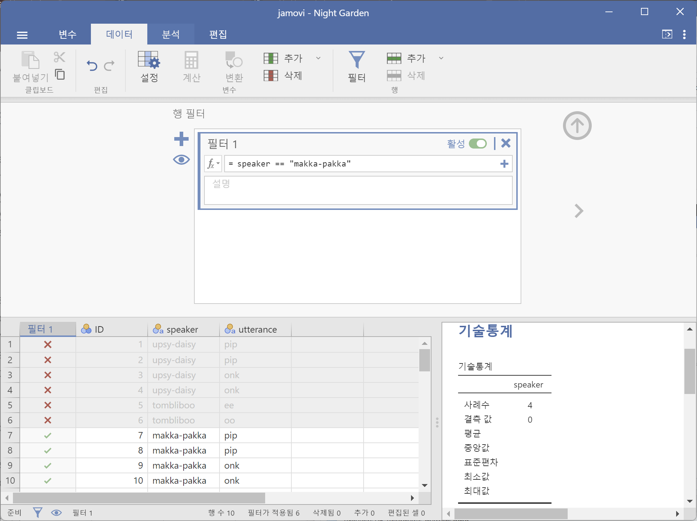
이 작업을 완료하면 스프레드시트 창에 ‘필터 1’이라는 새로운 열이 추가된 것을 볼 수 있습니다(Figure 6.11 참조). 여기에서 speaker가 ’makka-pakka’가 아니면 회색으로 표시되며(즉, 필터링됨), speaker가 ’makka-pakka’가 맞으면 초록색 체크 표시가 되어 필터링된 상태임을 나타냅니다. 이를 확인하려면 ’기술통계’-‘기술통계’ 창에서 speaker 변수에 대한 ’빈도분포표’를 실행하여 어떤 결과가 나오는지 확인해 보세요. 직접 시도해 보세요!
이 간단한 예제에 이어, jamovi에서는 논리 표현식을 사용하여 보다 복잡한 필터를 만들 수도 있습니다. 예를 들어, utterance 값이 “pip” 또는 “oo”인 경우만 유지하고 싶다고 가정해 보겠습니다. 이 경우 ‘필터 1’ 텍스트 상자에서 ‘=’ 기호 옆에 다음과 같이 입력하면 됩니다:
utterance == ‘pip’ or utterance == ‘oo’
6.7 요약
이 장에는 특별한 일관성이 있는 내용이 아닙니다. 여러 유용한 주제와 팁을 한데 모은 내용이므로, 가장 적절한 마무리는 다음 목록을 다시 한번 반복하는 것입니다:
이 인용문은 Home is the Hangman (1975)에서 나온 것이다.↩︎
저는 10대 시절 “쿨해 보이려는” 시도가 실패한 것을 증거로 제시하겠습니다. 어떤 것은 애초에 불가능합니다.↩︎
jamovi의 ‘계산된 새 변수(Compute new variable)’ 화면에서 직접 확인할 수 있습니다. 다만, 모든 셀에서 \(2 + 2\)를 계산하는 것은 큰 의미가 없겠죠!↩︎
=연산자와==연산자는 완전히 다른 의미를 가집니다. 많은 프로그래밍 언어나 통계 프로그램에서도=과==의 차이는 중요합니다. 사람들이 jamovi에서 논리 명령을 작성할 때 흔히 실수하는 부분이=를==대신 사용하는 것입니다. 저도 10대 시절부터 여러 프로그래밍 언어를 다뤄왔지만, 여전히 이 실수를 종종 저지릅니다. 주의하세요!↩︎jamovi의 흥미로운 특징이 있습니다. 간단한 논리 표현식(
2 + 2 == 5등)에서는 jamovi가 명확하게 ‘FALSE’ 또는 ‘TRUE’ 값을 출력합니다. 그러나 jamovi 내부적으로는FALSE를0,TRUE를1로 저장합니다. 따라서 조금 더 복잡한 논리 표현식, 예를 들어(2+2 == 4) or (2+2 == 5)을 평가하면, jamovi는FALSE또는TRUE대신0또는1을 출력합니다.↩︎숫자의 절댓값은 부호와 관계없이 해당 숫자가 0에서 얼마나 떨어져 있는지를 나타냅니다.↩︎
0을 0으로 유지하는 이유는 단순히 likert.centred / opinion.strength를 사용할 경우 수학적으로 0을 0으로 나눌 수 없기 때문입니다. 한번 시도해 보세요.↩︎
만약 이 책을 더 읽고 이 섹션을 다시 읽고 있다면, 이에 대한 좋은 예는
Age를 예측 변수로 사용하여 회귀 분석을 실행하는 대신AgeCats를 그룹 변수로 사용하여 ANOVA를 수행하는 경우일 것입니다. 이를 수행하는 데는 좋은 이유가 있을 수 있습니다. 예를 들어,Age와 결과 변수 간의 관계가 비선형적이며, 비선형 회귀를 실행하는 것이 어렵다고 느껴질 수 있습니다! 그러나 정말로 좋은 논리가 있는 경우가 아니라면, 그렇게 하지 않는 것이 좋습니다. 이는 다양한 문제를 초래할 수 있으며(예: 데이터가 정규성 가정을 위반할 가능성이 높음), 통계적 검정력도 상당히 손실될 수 있습니다.↩︎Box-Cox 함수에 대한 설명은 나중으로 미룹니다.↩︎